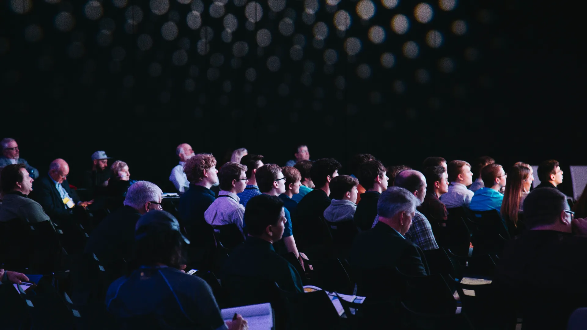

過去実績
1
イベント制作・運営

01 日本栄養学会 学術研究会制作・運営
企画立案から会場設営、当日の進行管理・運営までをワンストップで対応。主催者の負担を最小限に抑えつつ、発表者・来場者双方にとって快適な動線設計や、専門性の高い内容を支える映像・音響環境の最適化を実施しました。学会・シンポジウムの運営を検討中の団体様にも最適なご提案が可能です。

02 TEOMショッピングモール イベント制作・運営
ファミリーや高齢者など、幅広い層が訪れるモールイベントを数多く運営。イベント告知から誘導、現場参加までの流れがスムーズに展開し、商業空間としての魅力を高める構成を組み込み、施設の印象形成にも寄与する運営を意識しております。
03 南都区納涼大花火大会 制作・運営
南都区納涼大花火大会の運営を担当。駅・会場間の導線整理、案内サイン、観覧エリア配置を調整し、誰もが迷わず安心して楽しめる構成を実施。催事全体の印象が整うよう場づくりが進められており、大規模イベントにも応用可能です。
04 IaIaぽーと イベント制作・運営
日常の買い物動線の中に、上質さを損なわない非日常的な体験を組み込む構成で運営しています。過度な演出は避け、施設の世界観に調和する演出設計を重視。お客さまに滞在時間の自然な延長を促すような展開を心がけており、施設特性に応じた同様の構成もご提案可能です。